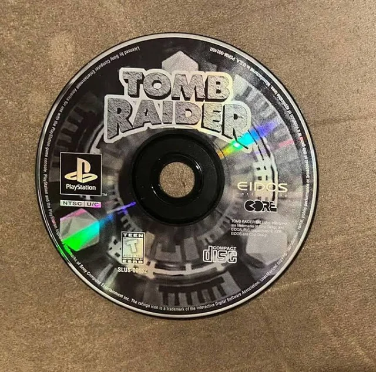

Tomb Raider (1996)

Lara's first adventure sends her on a globe-trotting quest to recover the ancient artifact known as the Scion of Atlantis. From the snowy peaks of Peru to the tombs of Egypt and the lost city itself, this game defined a genre with its atmospheric design, non-linear exploration, and emphasis on isolation and discovery.
Known for: That giant T-Rex in the Lost Valley and eerie, ambient silence.
Tomb Raider II (1997)
Bigger, bolder, and more action-packed, Tomb Raider II follows Lara as she searches for the Dagger of Xian, said to grant the power of a dragon. The game introduces vehicles, more enemies, and a wider variety of environments — from Venice’s canals to the Great Wall of China and the icy caves of Tibet.
Known for: Dual Uzis, diving swan-style off cliffs, and explosive trap-filled temples.
Tomb Raider III (1998)
The most challenging of the trilogy, Tomb Raider III sends Lara after mysterious meteorite shards known as the Infada artifacts. This time, the game offered branching paths and sprawling, deadly levels in India, London, Nevada, the South Pacific, and Antarctica — each with unique themes and dangers.
Known for: Multiple paths, brutal traps, and terrifying sound design (those rolling boulders, yikes).
The Legacy
These three games defined the golden age of Tomb Raider, turning Lara Croft into a pop culture icon and laying the foundation for a franchise that would evolve over decades. Their tank controls may feel dated today, but the atmosphere, sense of scale, and the thrill of exploration remain unforgettable.